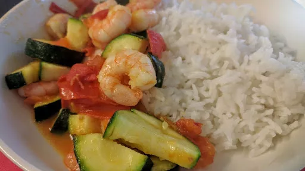

Fragrant courgette & prawn curry

Servings: 4
Total: 35 mins
Ingredients
- 2 tbsp sunflower oil
- 500 g courgettes, thickly sliced
- ½ tsp cumin seeds
- 6 cloves garlic, crushed
- 2 tbsp finely chopped ginger
- 1 red chilli, deseeded and chopped
- 1 tsp ground coriander
- ¼ tsp ground turmeric
- 500 g tomatoes, chopped
- 150 ml hot vegetable stock
- 225 g pack raw peeled frozen jumbo prawns, thawed
- ½ small bunch coriander, roughly chopped
- basmati rice and mango chutney
Instructions
- Heat the
oil2 tbsp
in a large wok and stir-fry the courgettes500 g
for 5-6 minutes until softened. Set aside on a plate leaving the oil2 tbsp
behind.
- Add the
cumin seeds½ tsp
to the wok and toast for a few seconds, then add the ginger2 tbsp
, garlic6 cloves
, chilli and spices. Cook, stirring, for 1-2 minutes, then tip in the tomatoes500 g
and cook for a few minutes more.
- Pour in the
stock150 ml
and simmer to make a pulpy sauce, then add the courgettes500 g
and prawns225 g pack
. Cook gently until the prawns225 g pack
change from grey to pink and the courgettes500 g
are tender but not too soft. Stir in most of the coriander½ small bunch
, saving some to sprinkle over the top.
- Serve with basmatic rice and mango chutney, and scatter over the remaining
coriander½ small bunch
.
-
kcal
305
-
fat
15 g
-
saturates
2 g
-
carbs
17 g
-
sugar
13 g
-
fibre
5 g
-
protein
28 g
-
salt
1.41 g
BBC Good Food: One-pot Dishes
Short Link
Long Link